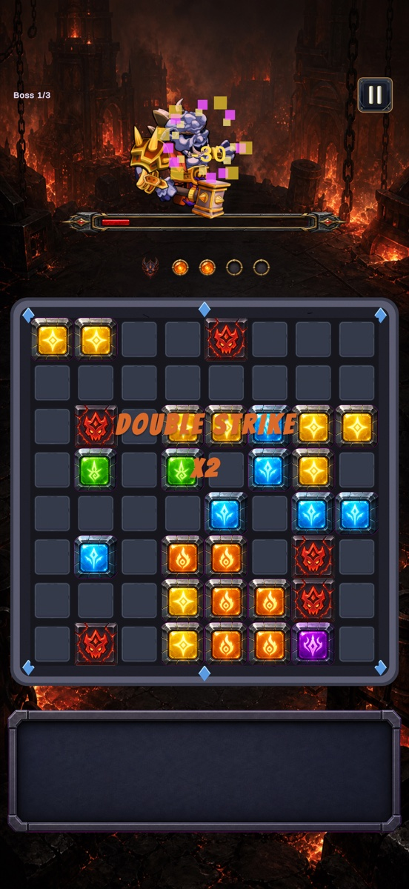
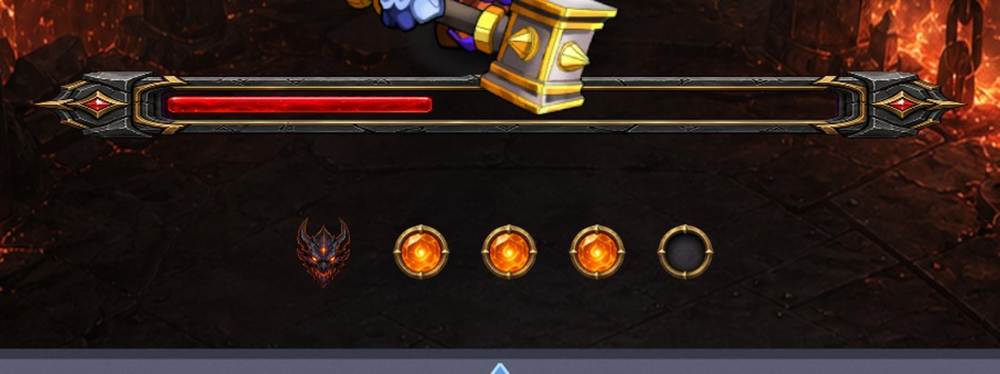
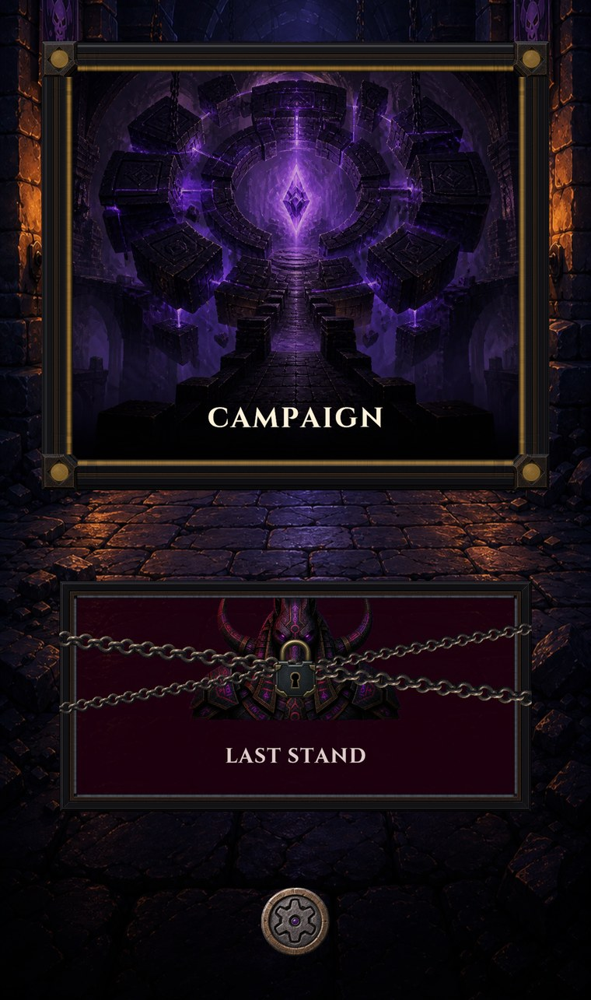

01
Can a familiar block-puzzle loop feel like a fight?
Block puzzles are easy to pick up and put down; every clear feels like the last one. Boss Blocks is one bet, that fighting a boss on the same board makes both halves better.
The hard part is where the two overlap. An attack that doesn't wreck your plan is decoration; one that wrecks it too hard turns the board to mush. The job was pressure that still feels fair while it ruins your day.
02
Clearing a line doesn't score points.
It takes a chunk out of the boss instead. Score is what a block puzzle gives you when it has nothing else to offer; here that same action decides whether you win.

03
The boss had to change the puzzle, not sit above it.
The easy version is a countdown: beat the boss before time runs out. Instead, attacks drop blocks onto the board. Fight and puzzle become one problem. Board space is the real currency; spending it turns the boss from an opponent into a mechanic.
What it costs: harder to keep fair. A badly timed attack reads as bad luck, not difficulty, and a cheated player doesn't come back.
04
You see the attack before you have to solve it.
Every attack is telegraphed: which ability is coming, how many turns until it lands. Difficulty becomes something you read and plan around, not something that happens to you.
That gives a loss an address: you can point to the turn you spent the wrong space. That's the difference between a game that feels hard and one that feels rigged.

05
The first fight is the tutorial.
There's nowhere to put a tutorial screen on a phone someone opened to play a block puzzle. So the opening fight teaches by being one, a boss slow and soft enough to let the loop explain itself: place, clear, watch the bar move, before anything pushes back.
What it costs: the first fight can't be interesting on its own terms. It's a teaching instrument first, tuned as one.
06
Three bosses a world, each asking the board for something different.
Variety isn't new art on the same fight: each boss spends board space differently, so what you plan around changes while the rules you learned stay true. Campaign is the taught path through them; Last Stand sits behind it, because the campaign ends and the reason to keep playing shouldn't.


07
A boss curve tuned on my own taste is worth very little.
I've played this game more than anyone alive, which makes me the worst judge of how hard the third fight is, so analytics, crash reporting and Remote Config went in while building, not as a pre-launch scramble.
What matters: boss balance can move without shipping a build. If a fight is where people stop, the numbers change and the next encounter uses them immediately.
What it costs: real time on plumbing invisible to how the game feels today. It pays for every decision made after launch.
08
The decision I'd defend
Building the whole thing changed how I think about difficulty. The boss HP curve was the easy part: a value in a config file, movable remotely on a Tuesday afternoon.
Whether a loss feels earned isn't a number, and tuning can't fix it after the fact. That's what the telegraph is for: four small orbs under a health bar, the least visible thing in the game and the one decision the whole idea rests on. Unfair is the one thing a puzzle player won't forgive.
The loop, the FTUE, the progression and the instrumentation are done. What's left is release readiness. It isn't on the App Store yet.
Want to see the build?
Happy to walk through the design calls, or show you where it is right now.